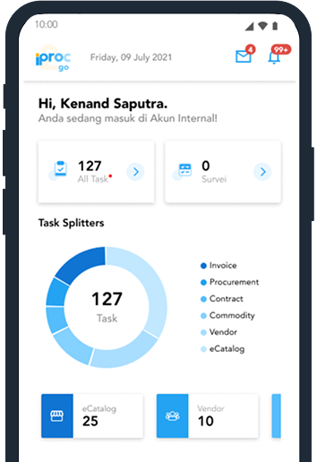

Transformasi Pengadaan di Ujung Jari Anda!
Kapan saja dan di mana saja, akses beberapa fitur iProc kini semakin mudah dengan iProc 2 Go, aplikasi iProc di mobile phone Anda.

Sebagai pelaku pengadaan, pernahkah Anda merasakan hal-hal berikut ini:
Butuh untuk segera memproses Request for Quotation (RFQ)?
Proses approval tertunda karena hanya bisa mengakses e-Procurement lewat laptop?
Kurang fleksibel dalam menangani proses pengadaan saat berada di luar kantor?
iProc 2 Go Solusinya!
Dengan iProc 2 Go, Anda dapat melakukan hal-hal berikut tanpa harus membuka laptop:
Melakukan seluruh proses Purchase-to-Pay melalui e-Catalogue
Melakukan Approval untuk Purchase Requisition (PR)
Melakukan Approval untuk Commodity
Melakukan Approval Vendor
Memproses Request for Quotation (RFQ)
Proses lebih cepat, efisien, dan fleksibel di mana saja dan kapan saja!
Segera unduh aplikasinya dan rasakan kemudahan mengelola e-Procurement dengan lebih praktis dan efisien! Untuk info cara mengunduh aplikasi dan info lainnya dapat menghubungi kontak berikut.
*hanya fitur-fitur tertentu dari iProc yang dapat dikelola melalui iProc 2 Go
